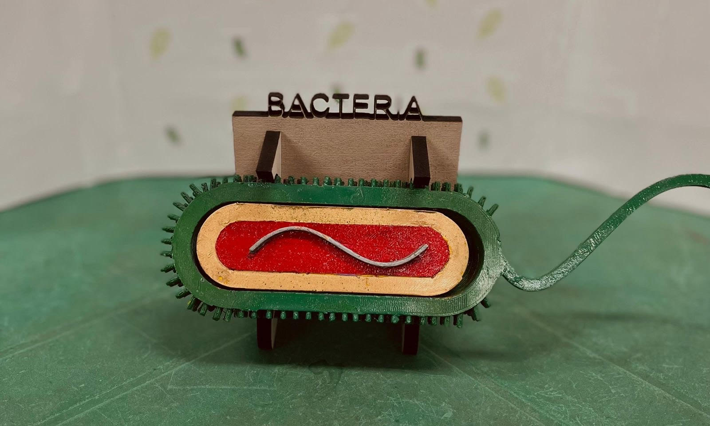

O Projeto Biomaker é uma iniciativa que visa transformar a forma como os estudantes e profissionais compreendem os conceitos da biologia, utilizando tecnologia de ponta como impressão 3D, Raspberry Pi e Internet das Coisas (IoT). Criado para ser uma ferramenta educacional inovadora, nosso projeto permite que conceitos complexos sejam explorados de maneira tangível e interativa, tornando o aprendizado mais dinâmico e acessível.
Durante a execução do projeto, várias etapas foram desenvolvidas para criar soluções práticas e interativas que facilitam o ensino de biologia e outras ciências, incluindo a modelagem de organismos microscópicos e processos biológicos que são difíceis de visualizar de outra forma.
O Projeto Biomaker não é apenas uma iniciativa científica, mas uma experiência inovadora que integra várias tecnologias de forma prática e educativa. Aqui estão algumas curiosidades interessantes sobre o projeto:
O BioMaker não apenas revolucionou a maneira de ensinar biologia, mas também gerou um impacto significativo na educação e na promoção do interesse científico. Veja alguns dos nossos principais impactos:
Alguns dos destaques que tornaram o BioMaker um projeto inovador e reconhecido são: